compressibleFoam Theory¶
Finite Volume Methods for Euler’s Equation¶
In the present chapter, we briefly derive the discretized finite volume scheme for the invscid compressible Euler’s equations. The formulation is cell-centered with first order accuracy. The implementation of the same using OpenFOAM libraries is discussed. Finally, the parallelization of the solver using OpenFOAM library is discussed.
Governing Equations¶
Shown in equations (1)-(3) are the compressible Euler equations in conservative form. The momentum equation (2) is arranged such that the flow variables are on the left hand side and the driving potential terms are on the right.
(1)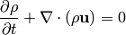
(2)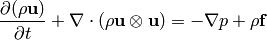
(3)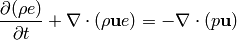
The governing equations used for the CFD calculations are the compressible Euler’s equations in Cartesian coordinates. The equations were introduced in differential form in equations (1)- (3), but for the finite volume discretization, the integral form of the equations is employed. The integral equations in vector form is shown in equation (4).
(4)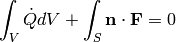
where,
(5)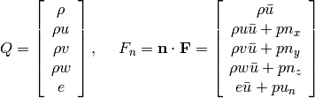
The vector 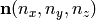 is the unit outward pointing normal of the surface of integration  . The dot on top of any variable denotes differentiation with respect to time. The fluid velocity vector is 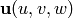 and the grid velocity is denoted by
. The dot on top of any variable denotes differentiation with respect to time. The fluid velocity vector is 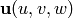 and the grid velocity is denoted by  . The quantity 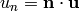 and 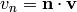 are the velocity components in the normal direction. Similarly, we have 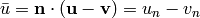.
. The quantity 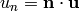 and 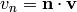 are the velocity components in the normal direction. Similarly, we have 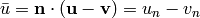.
Finite Volume Discretization¶
The volume integrals in equation (4) are evaluated using the cell center value (piecewise constant) and the cell volume 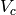 as shown in equation (6).
(6)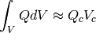

Piecewise-constant reconstruction
In this piecewise-constant reconstruction one has to solve a local Riemann problem at every edge indicated by the fractional indices 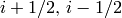 shown in figure Piecewise-constant reconstruction. The face average flux 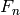 (piecewise-constant) is approximated as the face center value and it is obtained by solving the Riemann problem at the cell edge (given the left and right states). Introducing the above approximations, the discretized equation can be written as shown in equation :eq:euler_src_integral_discrete.
(7)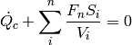
The flux can be evaluated using an Approximate Riemann solver for example the Roe scheme, using the left and right states of a face  and 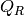 as shown in equation (:eq:roe_scheme).
and 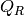 as shown in equation (:eq:roe_scheme).
(8)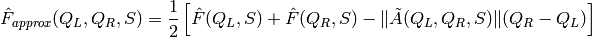
The discrete equation shown in equation (7) can be rearranged and written in a semi-discrete form as an Ordinary Differential Equation (ODE) shown in equation (9). The operator  consists of the discrete flux operator and the contribution due to source term. The explicit Euler time integration method has been implemented to solve this ODE as shown in equation (10).
consists of the discrete flux operator and the contribution due to source term. The explicit Euler time integration method has been implemented to solve this ODE as shown in equation (10).
(9)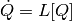
(10)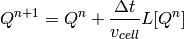
where,  is the time step and 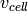 is the cell volume. 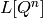 is the right hand side of the discrete equation (residue).
is the time step and 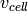 is the cell volume. 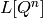 is the right hand side of the discrete equation (residue).
Local Time Stepping (LTS)¶
The solution is accelerated to steady state using the local time stepping (LTS). In equation (10) the 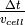 term is replaced by the CFL number (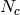) and local maximum eigenvalue integral as shown in equation (11).
(11)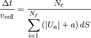
where, 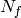 is the total number of faces in a cell and 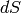 is the face area of the 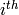 face.
Boundary Condition¶
The following types of boundary conditions have been implemented, namely,
- Supersonic Inflow
- Extrapolated Outflow
- Slip-wall
- Riemann Extrapolation
- Implicit non-reflecting boundary condition